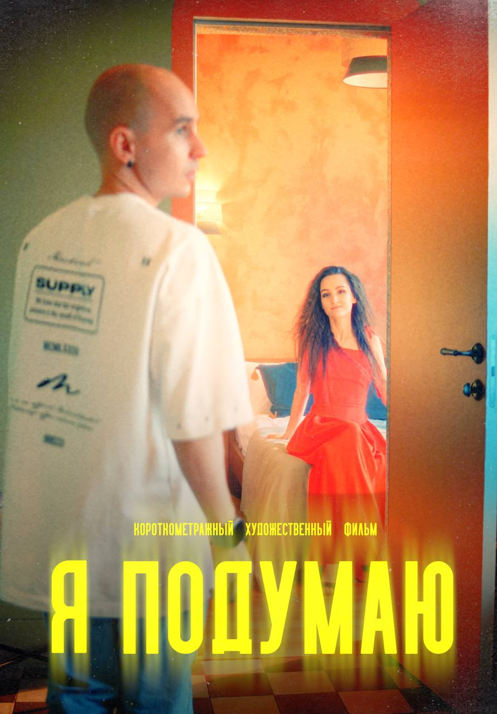

Пантеон · подарок
Твой пак
Открой карту, чтобы узнать награду
Бог
—
Редкость
—
Награда
—
—
—
Пак из трёх карточек приходит за каждое продление участия в клубе. Карточки нельзя купить — ни за деньги, ни за баллы.
Продление со скидкой за баллы пак не даёт: паки идут только за полную оплату месяца.
Чем дольше тебе не выпадает редкая карточка, тем выше её шанс в следующем паке. Самые редкие карточки ограничены по количеству — их физически не может выпасть больше определённого числа за период.
Закрытые паки не сгорают и ждут тебя. Если их накопится больше трёх, самый старый откроется сам — чтобы баллы из него не лежали без дела.
За полчаса поймёшь, как тут всё устроено и почему продажи перестают быть мучением.

Внутри — библиотека занятий, живые эфиры каждую неделю, разборы твоих ситуаций и личный план обучения под твои задачи.
Укажи номер телефона, использованный для оплаты подписки.
Продолжая, ты соглашаешься с политикой конфиденциальности и даёшь согласие на обработку персональных данных
Не получилось войти — попробуй ещё раз чуть позже.
Это займёт 10 секунд — и апп будет открываться так же быстро, как обычное приложение.
Можно открыть всё сразу — три дня за рубль. А можно остаться и посмотреть, что открыто бесплатно.
Канал и чат открыты. Тут много всего — покажу за пару минут, что где.
—